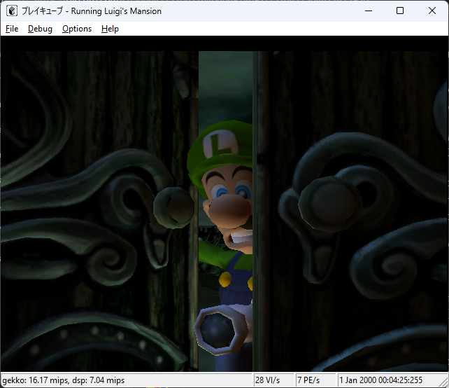
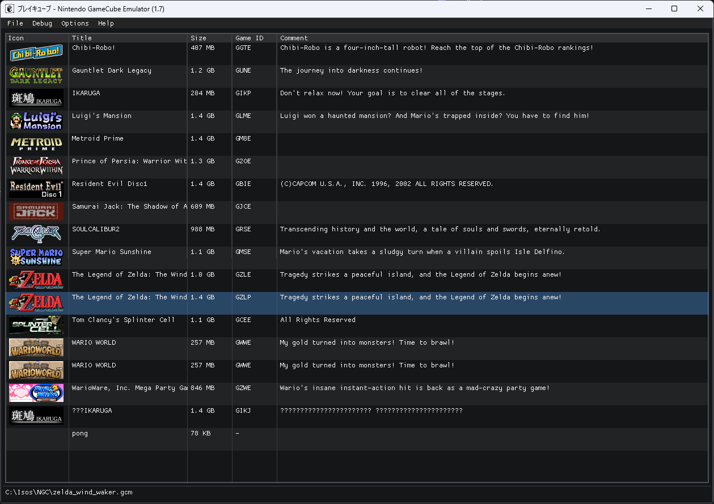
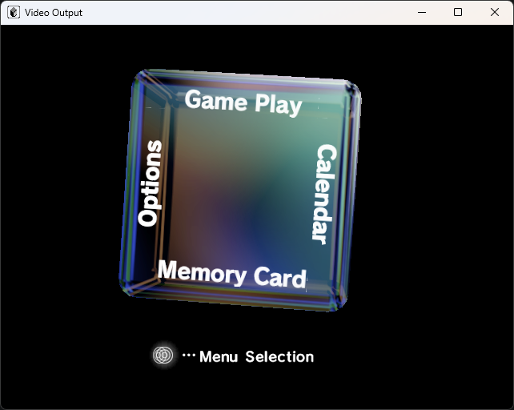

Дайджест: что изменилось после релиза 1.6
Релиз 1.6 был снимком эмулятора, который умел работать только под Win32, использовал фиксированный конвейер OpenGL и почти не имел автоматических тестов. Всё, что ниже, произошло после него: у эмулятора появился второй интерфейс пользователя, графический конвейер на шейдерах, стенд модульных тестов, прогоняющий настоящий аппаратный конвейер, загрузка Linux с работающим Broadband Adapter, проверенный по железу звук и длинный список исправлений, которые превратили несколько чёрных экранов в играбельную картинку.
Содержание
- Коротко о главном
- Хронология
- Графический конвейер: XF и TEV как шейдеры
- Стенд тестов для всего конвейера GFX
- Звук: DSP измеряется по железу
- Gekko, MMU и интерфейс памяти
- Загрузка GC-Linux
- Интерфейс пользователя и отладчик
- Совместимость
- Инструменты и система сборки
- Документация и репозиторий
- Что ещё не сделано
Коротко о главном
GLSL вместо фиксированного конвейера
XF и TEV эмулируются двумя статическими шейдерами, которые получают всё содержимое регистров через uniform-переменные. Вместе с этим появились все восемь текстурных карт, mip-уровни и исправленные режимы сэмплера.
340 тестов GFX + 177 тестов DSP
У обеих подсистем теперь есть наборы CppUnitTest, которые линкуют исходники эмулятора напрямую, плюс HTML-отчёт с 262 отрендеренными эталонными картинками.
Поведение по документации на железо
ARAM и AI приведены в соответствие с документацией; GQR и paired-single декодируются так, как биты пронумерованы в мануале ISA; декрементер смоделирован как на железе.
SDL-сборка выросла
В SDL-интерфейсе появились звук, полноценный селектор игр, диалоговые окна и файловый браузер; сборка работает под Windows и Linux.
Хронология
-
Август 2023 · сразу после 1.6
SDL-интерфейс и рефакторинг графики.
Интерфейс переехал в
uisdl.cpp/cuisdl.cpp, добавились файловый браузер ImGui, диалоговые окна и путь вывода через render target, была починена сборка под Linux, исправлены стик геймпада и бит переноса FIFO в PI. -
2024
Сборка догоняет.
Удалён конфликтующий
fmt, вычищены предупреждения компилятора, появились отдельные конфигурации Debug SDL / Release SDL и нормальныйWinMain. -
Февраль–март 2026
Visual Studio 2026 и рефакторинг Flipper (PR #326).
Каждый блок Flipper получил типизированный доступ к регистрам, Command Processor стал
самостоятельной сущностью Flipper, были отрефакторены PI FIFO, память, VI и GFX, удалён
8-битный доступ к железу, появился сброс памяти и звук через SDL. Папка
imgstoreпереехала вwiki. - Июль 2026 Отладочный интерфейс и работа с репозиторием. JDI (JSON Debugger Interface) и его интерфейс переехали на свои места, экземпляр Flipper теперь передаётся через дерево отладчика, исправлен загрузчик DOL/ELF (PONG снова запускается), а JSON-таблицы встроены в исходники (PR #332, #335).
- Сентябрь 2026 Большой рывок: шейдеры, тесты и совместимость. Шейдеры XF/TEV (#336), набор тестов DSP (#337), навигация по буквам в интерфейсе (#341), CP → XF (#342), селектор игр в SDL-сборке (#343), тесты GFX (#344), JAudio/DSP/AI (#345), исправления загрузки GC-Linux (#346), цвета ролика THP в Ikaruga (#348) и исправления чёрного экрана Metroid Prime (#349).
Графический конвейер: XF и TEV как шейдеры
Графический бэкенд Flipper больше не использует фиксированный конвейер OpenGL. Две программируемые ступени Flipper отображены на две программируемые ступени OpenGL 3.3 core:
-
Transform Unit эмулируется вершинным шейдером (
src/xf.cpp): умножение на матрицы геометрии и текстур, объединение с проекционной матрицей, освещение по вершинам для двух цветовых каналов (диффуз N·L, косинусное и дистанционное затухание) и генерация текстурных координат (обычная, по цвету и dual transform); -
Texture Environment Unit эмулируется фрагментным шейдером
(
src/tev.cpp): до 16 ступеней комбинирования с полным трактом операндов, bias, sub, clamp и shift, константами K ревизии B, туманом и финальной alpha-функцией.
Оба шейдера статические и получают состояние регистров через uniform-переменные, поэтому игра
может перепрограммировать регистры GFX без перекомпиляции шейдеров. Заодно был перестроен
текстурный блок: все восемь текстурных карт декодируются и привязываются независимо (раньше
была только одна), исправлены режимы wrap и фильтрации сэмплера (magnification и minification
были перепутаны) и генерируются mip-уровни. Растеризатор накапливает вершины в VBO и рисует
через glDrawArrays/glDrawElements, потому что в core-профиле OpenGL
нет GL_QUADS.
Второй рефакторинг привёл Command Processor к тому виду, который описывает железо: CP больше не
залезает внутрь графических блоков. Он передаёт слова команд в XF
(CPRegLoadBegin/CPRegLoadData, bypass-слова SU и строки вершин
команды рисования), опрашивает готовность XF и получает результаты чтения регистров через
CP_XF_DATAL/CP_XF_DATAH. Конвейер теперь строго
CP → XF → SU → RAS, а загрузка регистров стала пословной, поэтому частичная загрузка больше не
останавливает эмулятор.

Стенд тестов для всего конвейера GFX
Раньше у графической подсистемы не было автоматических тестов вообще — проверить её можно было
только запустив эмулятор и посмотрев на картинку. Новый стенд создаёт окно с настоящим
контекстом OpenGL, прогоняет эмулируемый CP через окно регистров PI (то есть display list'ы
разбираются по-настоящему), читает EFB обратно и сравнивает пиксели. Поведение вершинной
ступени проверяется через transform feedback, а Report::Section/Report::Image
публикуют HTML-отчёт рядом с DLL тестов.
Покрытие охватывает CP, XF, SU/RAS, TX, TEV и PE: поток команд и форматы вершин, матрицы, проекцию, вьюпорт, освещение, texgen и dual transform, примитивы, отсечение, scissor, размер линий и точек, привязки TREF, все форматы текселей и палитры, фильтры, режимы wrap, выбор mip, комбинирование цвета и альфы, константы K, туман, Z-окружение и indirect/bump-текстурирование, факторы и уравнения смешивания, логические операции, сравнения глубины, маски записи и очистку копированием. Проходит 340 тестов, а в отчёте — 262 отрендеренные картинки в 43 разделах.
Тесты сразу себя окупили. Среди найденных и исправленных ошибок:
- Чёрный экран Bootrom:
PE_COPY_CMDвыполнял очистку EFB в момент прихода команды, хотя кадр меняется позже поPE_FINISH— очистка стирала кадр, который ещё предстояло показать. Теперь очистка запоминается командой копирования и выполняется в начале кадра, принудительно включая маски записи. - Декодирование CMPR: цветовая таблица не инициализировалась, и только один из четырёх субблоков задавал альфу концевых точек, поэтому результат зависел от стека; четвёртый цвет трёхцветного режима записывался как среднее вместо прозрачного текселя, определённого форматом.
- Текстурные карты 4–7 вообще не могли быть запрограммированы: блок регистров I4–I7 декодировался как вторая копия I0–I3.
- Мультитекстурирование: текстурный блок для карты выбирался после её декодирования, загрузки и настройки, поэтому работа карты i попадала в блок карты i−1.
- Scissor был отключён макросом
NO_VIEWPORT, а регистры, которые декодировались, но никогда не применялись (TexMode0.lodbias,TexMode1.minlod/maxlod,SU_LPSIZE,SU_SSIZE/SU_TSIZE,RAS1_SS0/SS1,GEN_MODE.flat_en), теперь работают. - Туман TEV для F-select 1 и 3 не имел закона, а биты обновления цвета и альфы в PE применяются так, как описано в регистрах.
Звук: DSP измеряется по железу
Ядро DSP было проверено по векторам, снятым с самого DSP. В наборе есть тесты для каждой
непараллельной инструкции, независимая эталонная модель правил флагов C V Z N E U,
1822 эталонных вектора АЛУ, 435 эталонных векторов для кольцевых буферов, тесты
упакованных/параллельных слов и режимов адресации, протокола почтовых ящиков CPU↔DSP и полное
покрытие декодирования IROM вместе с опубликованным дизассемблером
(testing/DspIrom.md).
И тесты, и разбор дизассемблера выявили настоящие ошибки:
divпроводил перенос через маску неверного размера, поэтому младший бит частного всегда был нулевым, аnormиdivвообще были заглушками;lsf/asfсдвигали не в ту сторону во всех регистровых формах — счётчик это знаковый младший байт источника: положительный сдвигает влево, отрицательный вправо;ModifyFlagsне маскировал входные значения до 40 бит;neg pсообщал неверный заём; исправлены беззнаковые умножения, флаги логического семейства, правила аккумулятора и непосредственных операндов,clr,neg/negc,addp,lsl16,tst pи семейство умножения с накоплением;trapне увеличивал PC, поэтомуretiзацикливался на повторном исключении, а векторы прерываний игнорировали базу программы;- кольцевая адресация заворачивалась по длине модификатора вместо выровненного блока 2n, декодер принимал зарезервированные слова как допустимые инструкции, а почтовый ящик мог разорвать пару сообщений.
Проход по документации на железо переименовал регистры контроллера ARAM (ACRS/ACWE/…), исправил 32-байтный блочный перенос и маски адресов, переименовал AIDCR в CDCR, применил громкость потока AIVR к каналу DVD-звука (sample × volume / 256, 0x00 — тишина, 0xFF — полная шкала) и защёлкнул операнд упакованной половины памяти в ядре DSP. ARAM DMA теперь выполняется целиком внутри записи младшего слова AMBL, как в движках SI, EXI и DVD, а не нарезается рабочим потоком — именно из-за нарезки терялись запросы звукового DMA Metroid Prime и игра зависала сразу после вступительного ролика.
Gekko, MMU и интерфейс памяти
Расширения GQR и paired-single декодировались с неверной нумерацией бит: в мануале ISA поля
регистра нумеруются от старшего бита (LD_SCALE 24:29, LD_TYPE 16:18,
ST_SCALE 8:13, ST_TYPE 0:2), поэтому каждый ненулевой GQR
интерпретировался неправильно. Заодно исправлены правила преобразования (загрузка
масштабируется на 2−S, сохранение вычисляет clamp(trunc(F × 2S)), NaN
сохраняется как положительное насыщение, денормаль типа 0 — как 0.0) и условия HID2:
индексные формы psq_* требуют только HID2[PSE], неиндексные —
PSE и LSQE. Математика преобразований вынесена в чистый заголовок
src/gqr.h и покрыта тестами.
Обход хеш-таблицы MMU читал элементы таблицы страниц прямо из памяти, тогда как процессор
пишет их через кэш с обратной записью, поэтому только что созданные PTE были не видны, и ядро
бесконечно зацикливалось на одном и том же DSI-исключении; теперь
ReadHashPte/WriteHashPte делают обход когерентным с кэшем, как на
железе. mtcrf присваивал поля операндов в неверном порядке (поле RS использовалось
как маска CR, а поле CRM — как номер регистра, что читало gpr[128] за границей
массива), а lswi/lswx сохраняли последнее накопленное слово только
когда число байт не кратно четырём, что ломало копирование структур, сгенерированное GCC.
Декрементер теперь смоделирован так, как это делает железо: исключение вызывает опустошение
(underflow), оно генерируется один раз на опустошение, запрос защёлкивается и переживает период
с снятым MSR[EE], положительное значение счётчика снимает отложенный запрос, а при
сбросе счётчик отрицательный. Это исправило и тик таймера GC-Linux, и лайвлок IPL/Bootrom, где
чисто уровневый запрос бесконечно возвращался в вектор 0x900. Наконец, записи в регистры
входного буфера SI принимаются вместо остановки эмуляции, потому что драйвер
gcn-si в Linux сбрасывает их при инициализации.
Загрузка GC-Linux

gcnfb; драйвер Broadband
Adapter регистрируется, все четыре порта SI определяются.
Загрузка сборки GC-Linux 2004 года и стала тем тестом, который нашёл большинство описанных выше
ошибок процессора и интерфейсов: каждая из них останавливала ядро на своей стадии. После
исправления mtcrf, когерентного с кэшем обхода MMU, защёлкивающегося декрементера,
правильного lswi и не останавливающих SI ядро поднимает консоль
gcnfb и печатает чистый dmesg. Драйвер Broadband Adapter
инициализируется, а консоль кадрового буфера работает в режиме 640×480×16, NTSC/PAL60 480i.
Интерфейс пользователя и отладчик
SDL-сборка больше не заглушка. У неё собственный интерфейс на ImGui
(uisdl.cpp/cuisdl.cpp), встроенный файловый браузер, диалоговые окна
и отдельное окно видеовыхода, события которого фильтруются, чтобы перекрытый селектор не
реагировал на клики, предназначенные игре. Селектор игр из Win32-версии был портирован:
- исполняемые файлы (DOL/ELF) и образы дисков (GCM/ISO) собираются из пользовательской
переменной
PATH, с теми же маскамиFILTERпо расширениям; - баннеры дисков (
opening.bnr) преобразуются из тайлового формата RGB5A3 4×4 в текстуру SDL с альфа-каналом, Game ID читается из DiskID, а японские баннеры переводятся из SJIS; - в таблице есть столбцы Icon/Title/Size/Game ID/Comment и правила сортировки из Win32 (Default, Filename, Title, Size, Game ID, Comment, Unsorted);
- курсор перемещается кликом, стрелками вверх/вниз или набором первой буквы названия, а игра запускается по Enter или двойному клику;
- в меню Options → Selector есть Enable Selector, Refresh, Small Icons,
Sort by, File Filter и Add Directory; выбранный файл запоминается в
LASTFILEмежду запусками, а повторное сканирование не выполняется, пока запущена игра (чтение баннеров монтирует диски).

В отладочном интерфейсе появился сервер JDI (JSON Debugger Interface) и собственное представление для него, экземпляр Flipper передаётся через дерево отладчика, так что каждый блок можно осмотреть на месте, а отладчик умеет загружать меню IPL напрямую — это сильно ускорило работу со звуком.
Совместимость
Metroid Prime
Вступительный ролик оставался на чёрном экране, пока играл звук. Проигрыватель роликов не
вызывает GXDrawDone: он рисует, копирует кадр в XFB движком копирования и
ждёт обратного хода луча. Теперь копирование всего кадра в дисплейный буфер само является
границей кадра, частичные копии по-прежнему ждут PE_FINISH, а кадр выводится,
только если в нём есть ещё не показанное содержимое. После этого игра доходит до
титульного экрана.
The Legend of Zelda: The Wind Waker
Проходит загрузку. Матричная память XF и цветовые регистры теперь стартуют из состояния,
которое задаёт GXInit (проверено по прогону настоящего bootrom), включая
единичные матрицы в GX_IDENTITY и GX_DTTIDENTITY, которые игра
выбирает по индексу, не загружая их; без этого все текстурные координаты схлопывались в
(0, 0).
Ikaruga
Ролик THP декодировался в шахматку из float-фрагментов и рендерился розовым. Исправлено нумерацией полей GQR, разделением констант K ревизии B и цветовых регистров (у них общие id, но разное хранилище) и группировкой одноканальных селекторов K по каналам.
Luigi's Mansion
Работает на шейдерном конвейере и используется как дымовой тест для освещения и комбинирования текстур.
Меню IPL GameCube
Новый ключ --ipl загружает меню консоли без образа диска, а
--no-disc запускает эмуляцию с открытым лотком DVD. Это сильно ускорило
отладку звука.
PONG и homebrew
Загрузчик DOL/ELF исправлен, и PONG снова запускается — и напрямую, и из селектора игр.

--ipl; вращающийся куб
отрисован шейдерами XF/TEV.Инструменты и система сборки
- Visual Studio 2026. Проекты мигрированы и собираются MSVC v145; решение —
scripts/VS2026/pureikyubu.sln, проект тестов —scripts/VS2026/pureikyubu_test.slnx(устаревший проект VS2022 оставлен в дереве для справки). - Модульные тесты. Проект тестов ссылается на исходники эмулятора, а не копирует их, поэтому тесты всегда проверяют именно тот код, из которого собран эмулятор. Наборы: ядро DSP, флаги, эталонное АЛУ, параллельные слова, почтовый ящик, IROM, GQR и весь конвейер GFX.
- Отладочные средства.
EMU_LOG=<файл>сбрасывает сообщенияDebug::Reportв файл, аGFX_DUMPсохраняет каждый n-й отрисованный кадр в BMP (теперь с правильным порядком R и B). - Звук SDL. Новый бэкенд
audiosdl.cppдаёт SDL-сборке звук; проекты CMake и Visual Studio обновлены. - Данные и конфигурация. Эмулятор проверяет наличие каталога
Data, JSON-таблицы встроены в исходники, чтобы внешние файлы не требовались (PR #332), аMemRstдобавил полноценный путь сброса памяти.
Документация и репозиторий
- Внутрирепозиторная wiki была расширена и переорганизована:
wiki/gfx.mdтеперь подробно описывает конвейер GFX (238 строк), обновлены страницы Flipper, Gekko, main и Debug UI. Папкаimgstoreпереехала вwiki. testing/Readme.mdописывает структуру тестов и способы их запуска, аtesting/DspIrom.mdпубликует дизассемблер и разбор IROM процессора DSP.- В проекте приняты поведенческие правила в стиле Карпатого в файле
.clinerulesдля изменений с помощью ИИ.
Что ещё не сделано
- GFX: bump mapping, indirect-текстурирование, Z-текстурное окружение и Cpu2Efb пока не
эмулируются; PE dither и несколько полей флагов
SUнамеренно не реализованы и задокументированы вwiki/gfx.md. - Звук: полная поддержка микрокода JAudio (issue #71) — цель, к которой ведут недавние работы
по DSP/ARAM/AI; часть расхождений DSP с железом всё ещё зафиксирована и утверждается как
таковая в
testing/Readme.md. - Linux: в Linux-сборке по-прежнему нет звука и ввода.
- Исправления Metroid Prime на момент написания находятся в ветке разработки.
Дайджест составлен по истории git между тегом pureikyubu-16 и вершиной разработки.
Источники — сообщения коммитов, описания pull request'ов и страницы wiki.